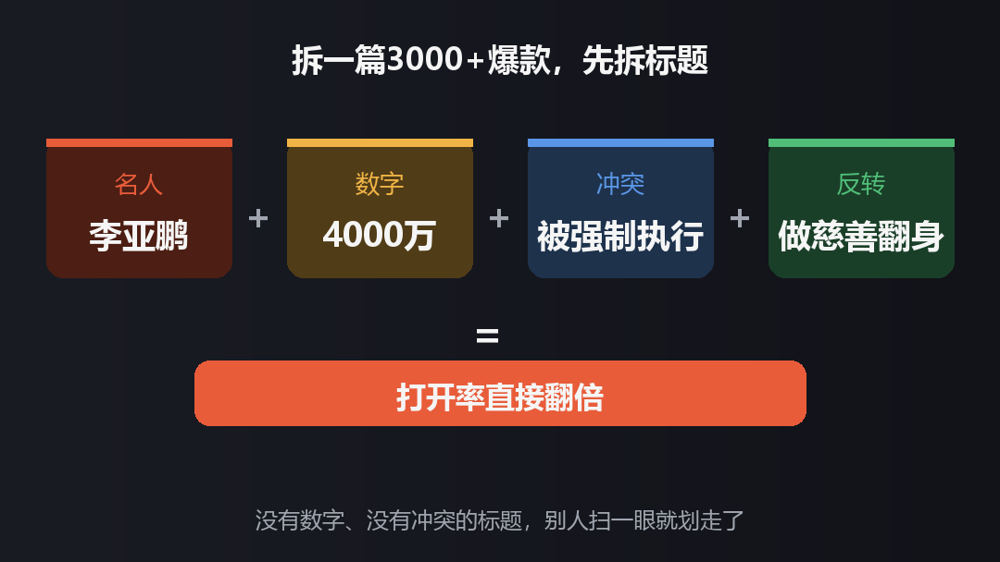
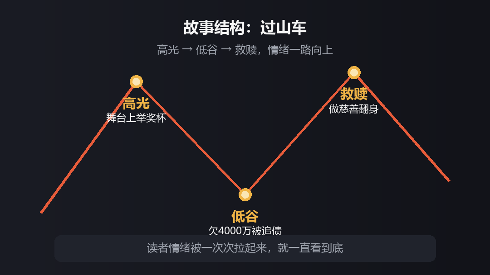
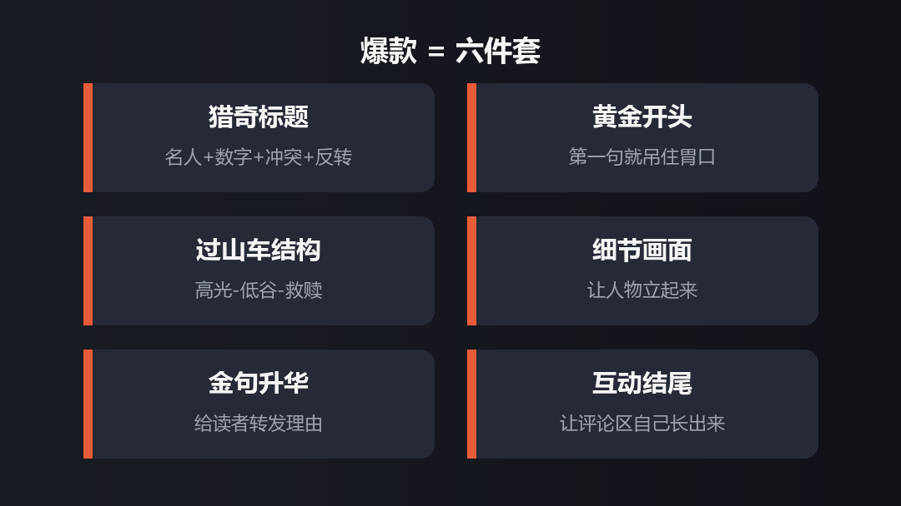

昨天下午那篇写李亚鹏的文章，阅读量过了三千。说实话我有点懵，因为关注我的总共也就五百来人。
后台有人留言问：你粉丝这么少，怎么跑出三千阅读的？我想了想，不是我文笔好，是写之前把每个环节都"算计"了一遍。
今天把过程原原本本写出来。你看完照着改，不敢说爆，但肯定比现在强。
这个标题我磨了快一个钟头，来回改了好几版：
拆开看，里面其实塞了四个钩子：
李亚鹏——认识他的人多，名字本身就是流量；4000万——具体数字，比"欠了很多钱"有冲击力一百倍；欠钱、被强制执行——冲突感拉满；最后靠做慈善翻身——一个欠债的人靠慈善翻身？谁不好奇。
四个钩子叠一块，标题想不点都难。你记住一句话：标题不是概括文章，是让人手痒。

我写的是：
有日期，有地点，有动作。"钉"字一出来，画面感就来了。读者扫到这一句，下意识就想往下看。
别寒暄，别铺垫，第一句就把人摁住。
那篇文章其实就三大段：他当年多风光——《将爱情进行到底》的国民男神，王菲的前夫，娱乐圈最会做生意的明星；后来多惨——欠4000万、被强制执行、成了老赖；最后怎么翻身——靠做慈善，把口碑一点点挣回来。
高光、低谷、救赎，就是个过山车。读者看文章不是听道理，是想看一个人怎么掉下去，又怎么爬上来。

全篇我自己最得意的是这句：
没讲一句大道理，但那个画面一出来，李亚鹏这个人就立住了。你说他善良，没人信；你写他在泥里爬还拉别人，人人都信。
写稿的时候，挑一个最戳你的瞬间，把它写出来，比堆一百个形容词都管用。
"输掉面子，守住里子"——这类句子不是写出来凑数的，是给读者一个转发的理由。他转的不是文章，是这句话。
结尾我抛了个问题：如果换作你，你愿意放下身段从头再来吗？评论区一下子就活了。互动不是等来的，是你问出来的。

我这号粉丝不多，这篇能跑出来，说明平台还是看内容的，小号也有机会。